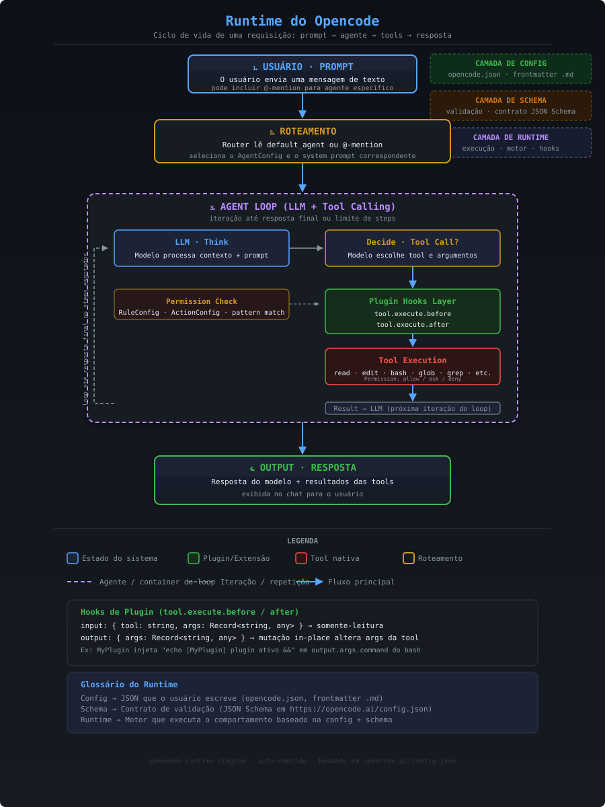

Agnóstico de provedor
Claude, OpenAI, Google, Groq, Bedrock e modelos locais. Defina o padrão e sobrescreva por agente.
O OpenCode é um agente de IA open source que acelera o fluxo de desenvolvimento de software. Roda no terminal (TUI), como app desktop ou extensão de IDE, é agnóstico de provedor (Claude, OpenAI, Google, modelos locais) e tem uma arquitetura cliente/servidor que permite operação remota. Esta página documenta o schema de configuração, o sistema de agentes, as tools, as permissões, os servidores MCP e — em detalhe — como criar plugins e custom tools.
O OpenCode evita o vendor lock-in por design: você conecta múltiplos provedores de LLM ao mesmo tempo e troca entre eles sem atrito. A experiência é construída para quem vive no terminal — navegação por teclado, customização profunda e integração nativa com LSP para compreensão de código.
Claude, OpenAI, Google, Groq, Bedrock e modelos locais. Defina o padrão e sobrescreva por agente.
TUI focada em teclado. Troque de agente com Tab ou via @menção.
Separe a interface de controle do ambiente de execução — rode opencode serve e conecte remotamente.
Plugins com hooks de ciclo de vida, custom tools em TS/JS e servidores MCP locais ou remotos.
O contrato de configuração
Toda configuração é validada contra um JSON Schema publicado em opencode.ai/config.json. Referenciá-lo no topo do seu opencode.json habilita autocompletar e validação em tempo real no editor.
O comportamento do runtime nasce da combinação de três camadas: a configuração que você escreve, o schema que a valida e o runtime que a executa orquestrando o agent loop.
1 · Config
O JSON que você escreve: opencode.json, frontmatter de agentes .md, arquivos em .opencode/.
2 · Schema
Contrato de validação (JSON Schema) que define a forma esperada da config e habilita o IntelliSense.
3 · Runtime
O motor: roteia o prompt para um agente, roda o loop LLM↔tools, dispara hooks e aplica permissões.

Cada mensagem percorre quatro etapas. O coração é o agent loop: um ciclo iterativo onde o modelo pensa, decide chamar uma tool (ou responder), os hooks são disparados e a tool executa sob a política de permissão.
Prompt & Roteamento
O usuário envia texto, opcionalmente com @agente. O runtime seleciona o default_agent ou o agente mencionado e carrega seu modelo, prompt e permissões.
LLM · Think
O modelo processa o contexto e decide o próximo passo: chamar uma tool com argumentos ou produzir a resposta final.
Hooks & Execução de Tool
tool.execute.before roda antes (pode mutar os argumentos), a política de permissão decide allow ask deny, a tool executa e tool.execute.after roda depois. O loop repete até a resposta final ou o limite de steps.
Output
A resposta do modelo é combinada com os resultados das tools e exibida. O ciclo encerra — ou recomeça com um novo prompt.
Limite de iterações
O agent loop respeita steps (antigo maxSteps): o número máximo de iterações antes de o agente ser forçado ao modo somente-texto. Isso impede loops infinitos quando o tool calling não converge.
Escolha o método de instalação adequado ao seu ambiente:
# Script de instalação (recomendado)
curl -fsSL https://opencode.ai/install | bash
# Homebrew (macOS / Linux)
brew install opencode-ai/tap/opencode
# npm
npm install -g opencode
# Go
go install github.com/opencode-ai/opencode@latest
# Verificar
opencode --versionConfigure a chave do provedor desejado antes do primeiro uso:
export ANTHROPIC_API_KEY="sk-ant-..."
export OPENAI_API_KEY="sk-..."
export GOOGLE_API_KEY="..."
export GROQ_API_KEY="..."
# Opcionais do OpenCode
export OPENCODE_CONFIG="$HOME/.config/opencode/opencode.json"
export OPENCODE_PERMISSION="ask" # nível de permissão padrãoInicialize o projeto
Rode opencode e use o comando /init para gerar um AGENTS.md — um resumo da estrutura, padrões e stack do seu projeto. Commite-o no versionamento para que o agente entenda seu código.
opencode.jsonA configuração vive em opencode.json na raiz do projeto, ou globalmente em ~/.config/opencode/opencode.json. A config de projeto sobrescreve a global. Sempre comece referenciando o schema:
{
"$schema": "https://opencode.ai/config.json",
"model": "anthropic/claude-sonnet-4-20250514",
"small_model": "anthropic/claude-haiku-4-5-20251001",
"default_agent": "build",
"username": "ada",
"share": "manual",
"autoupdate": "notify",
"permission": {
"edit": "ask",
"bash": "ask"
}
}Formato de modelo
Modelos seguem o formato provider/model — por exemplo anthropic/claude-sonnet-4-20250514 ou openai/gpt-4o. O small_model é usado para tarefas leves (títulos de sessão, sumarização) para reduzir custo.
O config não vem de um arquivo só — o OpenCode mescla várias camadas, e as de baixo sobrescrevem as de cima apenas nas chaves conflitantes (o resto é preservado). Esta é a ordem oficial:
| # | Camada | Origem |
|---|---|---|
| 1 | Remoto | .well-known/opencode — defaults da organização |
| 2 | Global | ~/.config/opencode/opencode.json |
| 3 | Path custom | variável OPENCODE_CONFIG |
| 4 | Projeto | opencode.json na raiz do projeto |
| 5 | Diretórios .opencode/ | agents, commands, plugins (auto-discovery) |
| 6 | Inline | variável OPENCODE_CONFIG_CONTENT |
Ao iniciar, o OpenCode procura o config no diretório atual e
sobe a árvore até o diretório .git mais próximo. A
raiz do projeto é definida por proximidade do .git, não por um
marcador explícito.
A regra que pega todo mundo
"Projeto sobrescreve global" é nativo — mas só vale para o projeto onde você
está fisicamente (dentro da fronteira do .git). Se você
roda o OpenCode de outro diretório, o opencode.json daquele
outro projeto não é carregado. O config de um projeto não "vaza" para
fora do .git dele.
E aqui mora um padrão poderoso, que é a versão imperativa da precedência
acima. Como um plugin carrega antes e roda código arbitrário, ele pode usar o hook
config para ler um opencode.json de
qualquer lugar do disco e injetá-lo no config em runtime — aplicando agentes e
permissões de um projeto globalmente, fora da fronteira do
.git.
import type { Plugin } from "@opencode-ai/plugin"
import * as fs from "node:fs/promises"
import * as path from "node:path"
export const BootstrapPlugin: Plugin = async () => {
return {
// O hook `config` recebe o config do runtime e pode MUTÁ-LO.
config: async (config) => {
// repoRoot relativo ao PRÓPRIO plugin — não ao cwd.
const repoRoot = path.resolve(import.meta.dir, "../..")
const raw = await fs.readFile(path.join(repoRoot, "opencode.json"), "utf-8")
const project = JSON.parse(raw)
// Merge: defaults do projeto primeiro, override do usuário vence.
config.agent = { ...project.agent, ...(config.agent ?? {}) }
config.permission = { ...project.permission, ...(config.permission ?? {}) }
},
}
}A semente declarativa é irredutível
Mesmo nesse padrão 100% imperativo, sobra uma coisa que precisa ser declarativa: a entrada no array plugin do config global que carrega o bootstrapper. É a maçaneta da porta imperativa — o único dado sem escape para código, porque é justamente ele que liga o código. Sem ela, nada sobe (e o OpenCode falha em silêncio: path errado não gera erro, só não carrega).
O bloco provider permite adicionar provedores customizados, sobrescrever opções (chave de API, baseURL, timeouts) e declarar modelos com seus custos, limites e modalidades.
{
"$schema": "https://opencode.ai/config.json",
"provider": {
"anthropic": {
"options": {
"apiKey": "{env:ANTHROPIC_API_KEY}",
"setCacheKey": true,
"timeout": 300000
}
},
"ollama": {
"npm": "@ai-sdk/openai-compatible",
"name": "Ollama (local)",
"options": { "baseURL": "http://localhost:11434/v1" },
"models": {
"llama3.1": {
"name": "Llama 3.1",
"tool_call": true,
"limit": { "context": 131072, "output": 8192 }
}
}
}
}
}| Campo (provider.*) | Tipo | Descrição |
|---|---|---|
npm | string | Pacote npm do SDK (ex.: @ai-sdk/openai-compatible). |
name | string | Nome de exibição do provedor. |
options.apiKey | string | Chave de API (use {env:VAR} para variáveis). |
options.baseURL | string | Endpoint da API (útil p/ self-hosted e compatíveis). |
options.setCacheKey | boolean | Habilita prompt caching. Padrão false. |
options.timeout | integer | false | Timeout em ms. Padrão 300000 (5 min). |
models.*.limit | object | { context, output } — janela de contexto e saída máxima. |
models.*.cost | object | { input, output, cache_read?, cache_write? }. |
models.*.modalities | object | { input[], output[] } — text, image, audio, video, pdf. |
O bloco agent mapeia nomes para configurações. Existem agentes embutidos (build plan general explore) e você pode definir os seus. O modo determina como o agente é invocado: primary (agente principal), subagent (acionado via @nome) ou all.
{
"$schema": "https://opencode.ai/config.json",
"agent": {
"plan": {
"model": "anthropic/claude-sonnet-4-20250514",
"permission": { "edit": "deny", "bash": "deny" }
},
"reviewer": {
"description": "Especialista em revisão de código e segurança",
"mode": "subagent",
"model": "anthropic/claude-sonnet-4-20250514",
"temperature": 0.3,
"top_p": 0.9,
"prompt": "{file:./.opencode/agent/reviewer.md}",
"steps": 20,
"color": "#bc8cff",
"hidden": false,
"permission": {
"read": "allow",
"grep": "allow",
"edit": "deny",
"bash": "deny",
"webfetch": "deny"
}
}
}
}| Campo (agent.*) | Tipo | Descrição |
|---|---|---|
description | string | Quando usar este agente (essencial para subagents). |
mode | "primary" | "subagent" | "all" | Como o agente é acionado. |
model | string | Sobrescreve o modelo padrão (provider/model). |
temperature | number | Aleatoriedade da resposta (0.0–1.0). |
top_p | number | Amostragem nucleus. |
prompt | string | System prompt inline ou {file:caminho.md}. |
steps | integer > 0 | Máx. de iterações antes do modo texto. (maxSteps é deprecado.) |
permission | object | Sobrescreve permissões no escopo do agente. |
color | hex | tema | #RRGGBB ou primary/accent/success/warning/error/info. |
hidden | boolean | Oculta do menu @. Padrão false. |
disable | boolean | Desativa o agente. |
tools | object | deprecado — prefira permission. |
Cada permissão é uma ação — allow executa sem aprovação, ask pede confirmação e deny bloqueia. Você pode aplicar uma ação simples a uma tool, ou um objeto com padrões wildcard para controle granular — ideal para o bash.
{
"$schema": "https://opencode.ai/config.json",
"permission": {
"read": "allow",
"grep": "allow",
"glob": "allow",
"list": "allow",
"webfetch": "ask",
"edit": "ask",
"bash": {
"*": "ask",
"git *": "allow",
"npm *": "allow",
"ls *": "allow",
"rm *": "deny",
"git push *": "deny"
}
}
}| Chave | Aplica-se a |
|---|---|
read · edit · write | Operações de arquivo. |
bash | Execução de shell (suporta wildcard por comando). |
glob · grep · list | Busca e listagem. |
webfetch · websearch | Acesso à web. |
task | Delegação para subagents. |
external_directory | Acesso a diretórios fora do projeto. |
repo_clone · repo_overview · lsp · skill | Operações de repositório, LSP e skills. |
doom_loop | Salvaguarda contra loops repetitivos. |
Padrões seguros
A maioria das tools usa allow por padrão, exceto salvaguardas: doom_loop e external_directory usam ask, e arquivos .env* usam deny. Permissões de agente têm precedência sobre as globais.
Permissão como dado ou como código
O bloco acima é a porta declarativa. Mas há uma porta imperativa: um plugin pode interceptar o hook permission.ask e decidir allow ask deny com lógica condicional de verdade (if, regex, hora do dia, estado do projeto…). JSON e código não são dois sistemas — são duas portas para o mesmo runtime. Use o JSON enquanto regra estática basta; desça para código quando precisar de condicional.
O bloco mcp conecta servidores MCP para estender as capacidades do agente (bancos de dados, APIs, ferramentas externas). Há dois tipos: local (processo iniciado por comando) e remote (URL, com OAuth opcional).
{
"$schema": "https://opencode.ai/config.json",
"mcp": {
"postgres": {
"type": "local",
"command": ["npx", "-y", "@modelcontextprotocol/server-postgres"],
"environment": { "DATABASE_URL": "{env:DATABASE_URL}" },
"enabled": true,
"timeout": 5000
},
"company-api": {
"type": "remote",
"url": "https://mcp.example.com/sse",
"enabled": true,
"headers": { "X-Team": "platform" },
"oauth": {
"scope": "read:tools",
"callbackPort": 19876
}
}
}
}| Local | Tipo |
|---|---|
type | "local" |
command | string[] (obrig.) |
environment | object |
enabled | boolean |
timeout | integer (def. 5000) |
| Remote | Tipo |
|---|---|
type | "remote" |
url | string (obrig.) |
headers | object |
oauth | object | false |
timeout | integer (def. 5000) |
O bloco command define templates reutilizáveis acionados por /nome. Um comando pode amarrar um agente, sobrescrever o modelo e usar argumentos e injeção de saída de shell no template.
{
"$schema": "https://opencode.ai/config.json",
"command": {
"review": {
"description": "Revisa as mudanças recentes",
"agent": "reviewer",
"template": "Revise o diff a seguir e aponte riscos:\n\n!`git diff HEAD~1`"
},
"component": {
"description": "Cria um componente React",
"template": "Crie um componente React chamado $1 em $2 com TypeScript, Tailwind e testes."
}
}
}Comandos também podem viver como arquivos Markdown em .opencode/command/<nome>.md, com frontmatter YAML. Use $ARGUMENTS/$1 para argumentos, !`comando` para injetar saída de shell e @arquivo para referenciar arquivos.
formatter e lsp aceitam
boolean (liga/desliga o auto-detectado) ou um objeto com servidores
customizados por linguagem.
{
"$schema": "https://opencode.ai/config.json",
"formatter": {
"prettier": {
"command": ["npx", "prettier", "--write", "$FILE"],
"extensions": [".ts", ".tsx", ".json", ".css"]
}
},
"lsp": {
"typescript": {
"command": ["typescript-language-server", "--stdio"],
"extensions": [".ts", ".tsx"]
},
"eslint": { "disabled": true }
}
}Opções de compartilhamento, atualização, instruções extras, aparência e ajuste fino do runtime:
{
"$schema": "https://opencode.ai/config.json",
"theme": "opencode",
"share": "manual",
"autoupdate": "notify",
"snapshot": true,
"logLevel": "INFO",
"shell": "/bin/zsh",
"instructions": ["AGENTS.md", "docs/conventions/*.md"],
"keybinds": { "session_new": "ctrl+n", "app_exit": "ctrl+c ctrl+c" },
"tool_output": { "max_lines": 2000, "max_bytes": 51200 },
"compaction": { "auto": true, "prune": true, "tail_turns": 2 },
"experimental": { "batch_tool": true }
}| Campo | Tipo | Descrição |
|---|---|---|
theme | string | Tema visual da TUI. |
share | "manual" | "auto" | "disabled" | Comportamento de compartilhamento de sessões. |
autoupdate | boolean | "notify" | Atualização automática. |
snapshot | boolean | Rastreamento de snapshots do FS. Padrão true. |
logLevel | DEBUG|INFO|WARN|ERROR | Verbosidade de log. |
instructions | string[] | Arquivos/padrões de instruções extras carregados no contexto. |
keybinds | object | Mapeamento ação → tecla. |
tool_output | object | max_lines (2000), max_bytes (51200) — truncamento. |
compaction | object | Compactação automática de contexto. |
experimental | object | Flags experimentais (batch_tool, openTelemetry…). |
Todas as propriedades de topo de opencode.json:
| Propriedade | Tipo | Descrição |
|---|---|---|
$schema | string | URL do JSON Schema para validação. |
model | string | Modelo padrão (provider/model). |
small_model | string | Modelo leve para tarefas auxiliares. |
default_agent | string | Agente usado sem menção explícita. |
username | string | Nome de usuário exibido nas conversas. |
agent | object | Configurações de agentes nomeados. |
provider | object | Provedores e overrides de modelo. |
permission | object | Regras globais de permissão. |
mcp | object | Servidores MCP (local/remote). |
command | object | Templates de comandos customizados. |
plugin | array | Plugins (string ou tupla [nome, config]). |
skills | object | Caminhos/URLs de skills adicionais. |
reference | object | Referências nomeadas (@alias) git/dir. |
formatter | boolean | object | Formatação de código. |
lsp | boolean | object | Servidores LSP. |
instructions | array | Arquivos de instrução extras. |
keybinds | object | Atalhos de teclado. |
theme | string | Tema da interface. |
share | enum | manual | auto | disabled. |
autoupdate | boolean | "notify" | Atualização automática. |
snapshot | boolean | Snapshots do filesystem. |
server | object | port, hostname, mdns, cors. |
watcher | object | Observação de arquivos e ignore patterns. |
attachment | object | Limites de imagem (resize, tamanho). |
tool_output | object | Limiares de truncamento de saída. |
compaction | object | Compactação de contexto. |
experimental | object | Flags experimentais. |
logLevel | enum | DEBUG | INFO | WARN | ERROR. |
shell | string | Shell padrão para a tool bash. |
Além de declarar agentes no JSON, você pode defini-los como arquivos Markdown — a forma recomendada, pois mantém o system prompt junto da configuração. Coloque-os em .opencode/agent/<nome>.md (projeto) ou ~/.config/opencode/agent/ (global). O frontmatter YAML carrega os campos do schema; o corpo é o system prompt.
---
description: Especialista em revisão de código para qualidade e segurança
mode: subagent
model: anthropic/claude-sonnet-4-20250514
temperature: 0.3
permission:
read: allow
grep: allow
glob: allow
edit: deny
bash: deny
---
Você é um especialista em revisão de código focado em:
1. Qualidade e boas práticas
2. Vulnerabilidades de segurança (referencie o OWASP Top 10)
3. Problemas de performance
4. Manutenibilidade
Ao revisar:
- Classifique os achados por severidade (CRÍTICO, MAIOR, MENOR)
- Forneça referências de linha específicas
- Sugira melhorias concretas alinhadas aos padrões do projetoAcionando o agente
Com mode: subagent, o agente é registrado como @reviewer e pode ser invocado por menção, pela tool task ou por um comando que o referencie. Use opencode agent create para um assistente interativo de criação, e opencode agent list para verificar o registro.
As tools embutidas que o agente pode chamar durante o loop. A coluna de permissão indica o comportamento padrão.
| Tool | Descrição | Permissão |
|---|---|---|
read | Lê o conteúdo de arquivos. | allow |
write | Cria ou sobrescreve arquivos. | edit |
edit | Edita via substituição exata de string. | edit |
patch | Aplica patches ao código. | edit |
grep | Busca conteúdo por regex. | allow |
glob | Encontra arquivos por padrão (**/*.ts). | allow |
list | Lista arquivos e diretórios. | allow |
bash | Executa comandos de shell. | ask |
webfetch | Busca e lê páginas web. | ask |
lsp | Language Server Protocol (experimental). | allow |
skill | Carrega o conteúdo de um SKILL.md. | allow |
task | Delega para um subagent. | allow |
todoread / todowrite | Rastreamento de tarefas na sessão. | allow |
Um plugin é um módulo JavaScript/TypeScript que exporta uma ou mais funções de plugin. Cada função recebe um objeto de contexto e retorna um objeto de hooks. Plugins são descobertos e carregados automaticamente — sem registro explícito.
O modelo mental que a doc oficial não te dá
Um plugin não é uma "configuração" — é código JS/TS carregado dentro de um processo servidor de longa duração que o OpenCode mantém rodando por baixo dos panos. E o diretório .opencode/ não é mágico: ele é um projeto Node/Bun já inicializado (tem package.json e node_modules). Tudo o que roda lá dentro herda essa resolução de módulos.
Desse único fato cai todo o resto: por que .ts/.js "simplesmente roda", por que dependências externas exigem um package.json, por que um plugin fora de .opencode/ precisa replicar esse contexto, e por que você reinicia o OpenCode para recarregar um plugin. Segure essa ideia enquanto lê os passos abaixo.
Crie o arquivo do plugin
Plugins de projeto ficam em .opencode/plugin/; globais em ~/.config/opencode/plugin/ (carregados na inicialização). Na verdade, um plugin pode morar em qualquer lugar — basta apontar o caminho correto. A vantagem de ficar dentro de .opencode/ é herdar de graça o node_modules e o package.json que já existem ali.
meu-projeto/
├── opencode.json
└── .opencode/
├── plugin/
│ └── notify.ts # ← seu plugin
└── package.json # dependências npm opcionaisExporte a função de plugin
Importe o tipo Plugin de @opencode-ai/plugin.
A função async recebe o contexto e retorna os hooks.
import type { Plugin } from "@opencode-ai/plugin"
export const NotifyPlugin: Plugin = async ({ project, client, $, directory, worktree }) => {
// Executa uma vez no carregamento do plugin.
console.log(`[notify] plugin ativo em ${directory}`)
return {
// hooks aqui ↓
}
}| Contexto | O que é |
|---|---|
project | Informações do projeto atual. |
client | Cliente do SDK do OpenCode (interação com a IA). |
$ | Shell API do Bun para executar comandos. |
directory | Diretório de trabalho atual. |
worktree | Caminho do worktree Git. |
Implemente os hooks
O hook tool.execute.before recebe (input, output) e pode mutar os argumentos da tool antes da execução. O tool.execute.after roda depois, com acesso ao resultado.
import type { Plugin } from "@opencode-ai/plugin"
export const NotifyPlugin: Plugin = async ({ $ }) => {
return {
// Antes de executar qualquer tool — pode mutar output.args
"tool.execute.before": async (input, output) => {
if (input.tool === "bash") {
output.args.command = `echo "[notify] rodando…" && ${output.args.command}`
}
},
// Depois da execução — bom para logging/telemetria
"tool.execute.after": async (input, output) => {
console.log(`[notify] tool "${input.tool}" concluída`)
},
// Injeta variáveis de ambiente no shell
"shell.env": async (input, output) => {
output.env.PROJECT_ROOT = input.cwd
},
// Notificação de desktop quando a sessão fica ociosa
"session.idle": async ({ sessionID }) => {
await $`notify-send "OpenCode" "Sessão ${sessionID} aguardando você"`
},
}
}(Opcional) Dependências npm
O package.json aqui não serve para "ser plugin" — serve para resolução de dependência. Sem nenhuma lib externa, você não precisa de package.json algum: solte o .ts e pronto. Com lib externa, adicione um package.json em .opencode/ e o OpenCode roda bun install no boot.
{
"dependencies": {
"shescape": "^2.1.0"
}
}Por que fora do .opencode/ quebra
Como .opencode/ já tem node_modules e package.json, o import resolve sozinho. Se o plugin viver fora dali, você precisa replicar esse contexto — rodar npm init / bun install na pasta dele. Apagar o node_modules quebra o plugin pelo mesmo motivo que rodar node sem instalar as deps, ou Python sem as libs: não há o que importar.
Instale plugins publicados (npm)
Para plugins distribuídos via npm, liste-os no array plugin. São instalados automaticamente via Bun e cacheados em ~/.cache/opencode/node_modules/.
{
"$schema": "https://opencode.ai/config.json",
"plugin": [
"opencode-helicone-session",
["@my-org/custom-plugin", { "level": "verbose" }]
]
}before vs. after
Use tool.execute.before para validar ou transformar argumentos (ex.: escapar comandos perigosos, injetar flags). Use tool.execute.after para observar — logging, métricas, notificações — sem alterar o fluxo.
Por que você reinicia o OpenCode para recarregar
O runtime roda um processo servidor de longa duração por baixo dos panos — ele aparece na lista de processos do seu sistema. Plugins são carregados uma vez, no boot. Por isso, ao modificar um plugin, você precisa sair e entrar de novo no OpenCode: o servidor encerra a conexão e só recarrega tudo na próxima inicialização.
console.log no topo e a ordem de execução
O corpo da função do plugin é código de boot — JavaScript comum, sem mágica. Um console.log no topo aparece cedo porque é síncrono: pelo event loop, a call stack síncrona esvazia por completo antes de qualquer callback assíncrono (promises/microtasks, depois timers/macrotasks) ter a vez. Como a maior parte do runtime é assíncrona, o log síncrono roda antes de quase tudo.
Os hooks disponíveis, agrupados por categoria. Os de interceptação (tool/shell/custom tool) recebem (input, output) e podem influenciar a execução; os demais são eventos de ciclo de vida que você observa.
| Categoria | Hooks |
|---|---|
| Config | config (muta o config do runtime — ver Carregamento & Precedência) |
| Tool | tool.execute.before · tool.execute.after · tool (registro de custom tools) |
| Shell | shell.env |
| Sessão | session.created · session.updated · session.idle · session.compacted · session.deleted · session.diff · session.error · session.status |
| Mensagem | message.updated · message.removed · message.part.updated · message.part.removed |
| Permissão | permission.asked · permission.replied |
| Arquivo | file.edited · file.watcher.updated |
| LSP | lsp.client.diagnostics · lsp.updated |
| Comando | command.executed |
| Todo | todo.updated |
| Servidor | server.connected · installation.updated |
| TUI | tui.prompt.append · tui.command.execute · tui.toast.show |
| Experimental | experimental.session.compacting |
Custom tools dão ao agente capacidades sob medida (consultar um banco, chamar uma API interna, rodar um script). Elas são definidas em TypeScript/JavaScript e ficam disponíveis ao LLM automaticamente.
Crie o arquivo — o nome vira o nome da tool
Coloque tools em .opencode/tool/ (projeto) ou ~/.config/opencode/tool/ (global). O nome do arquivo define o nome da tool: database.ts → tool database. Múltiplos exports usam o padrão <arquivo>_<export> — exportar add de math.ts cria math_add.
Defina a tool com o helper tool()
Importe tool de @opencode-ai/plugin. Forneça description, args (validados via tool.schema, que é Zod) e execute.
import { tool } from "@opencode-ai/plugin"
export default tool({
description: "Executa uma consulta SQL somente-leitura no banco do projeto",
args: {
query: tool.schema.string().describe("A instrução SQL SELECT a executar"),
limit: tool.schema.number().describe("Máximo de linhas a retornar").default(50),
},
async execute(args, context) {
const { sessionID, agent, directory, worktree } = context
const rows = await runReadOnlyQuery(args.query, args.limit)
return JSON.stringify(rows, null, 2)
},
})Use o contexto de execução
O segundo argumento de execute traz metadados úteis da sessão: agent, sessionID, messageID, directory e worktree.
import { tool } from "@opencode-ai/plugin"
import path from "path"
// Cria a tool "math_add" (export nomeado em math.ts)
export const add = tool({
description: "Soma dois números via um script Python",
args: {
a: tool.schema.number().describe("Primeiro número"),
b: tool.schema.number().describe("Segundo número"),
},
async execute(args, context) {
const script = path.join(context.worktree, ".opencode/tool/add.py")
const result = await Bun.$`python3 ${script} ${args.a} ${args.b}`.text()
return result.trim()
},
})Como alternativa, registre via plugin
Plugins também podem expor tools pelo hook tool, útil quando a tool compartilha estado com outros hooks do mesmo plugin.
import { type Plugin, tool } from "@opencode-ai/plugin"
export const CustomToolsPlugin: Plugin = async (ctx) => {
return {
tool: {
greet: tool({
description: "Cumprimenta alguém pelo nome",
args: { name: tool.schema.string() },
async execute(args) {
return `Olá, ${args.name}!`
},
}),
},
}
}Disponibilidade automática
Uma vez no diretório de tools, a custom tool fica disponível ao LLM durante as conversas — sem registro manual. Descrições claras em description e nos .describe() dos argumentos são o que ensina o modelo a usá-la corretamente. Custom tools com o mesmo nome de uma tool nativa a sobrescrevem.
Comandos essenciais do binário opencode:
# TUI interativa
opencode # inicia no diretório atual
opencode /caminho/projeto # inicia em um projeto
opencode --continue # continua a última sessão
opencode --model anthropic/claude-sonnet-4-20250514
# Modo não-interativo
opencode run "explique este codebase"
opencode run --file src/main.ts "adicione tratamento de erro"
opencode run --command review
opencode run --format json "liste todas as funções"
# Servidor / web
opencode serve --port 8080 # servidor headless
opencode web --port 8080 # interface web
opencode attach http://localhost:8080
# Agentes, MCP e sessões
opencode agent create
opencode agent list
opencode mcp add <servidor>
opencode session list --max-count 10
opencode export <session-id>steps.primary ou subagent.allow), pede confirmação (ask) ou é bloqueada (deny).opencode.ai/config.json que valida a configuração e habilita autocompletar..opencode/tool/, exposta ao LLM via o helper tool().